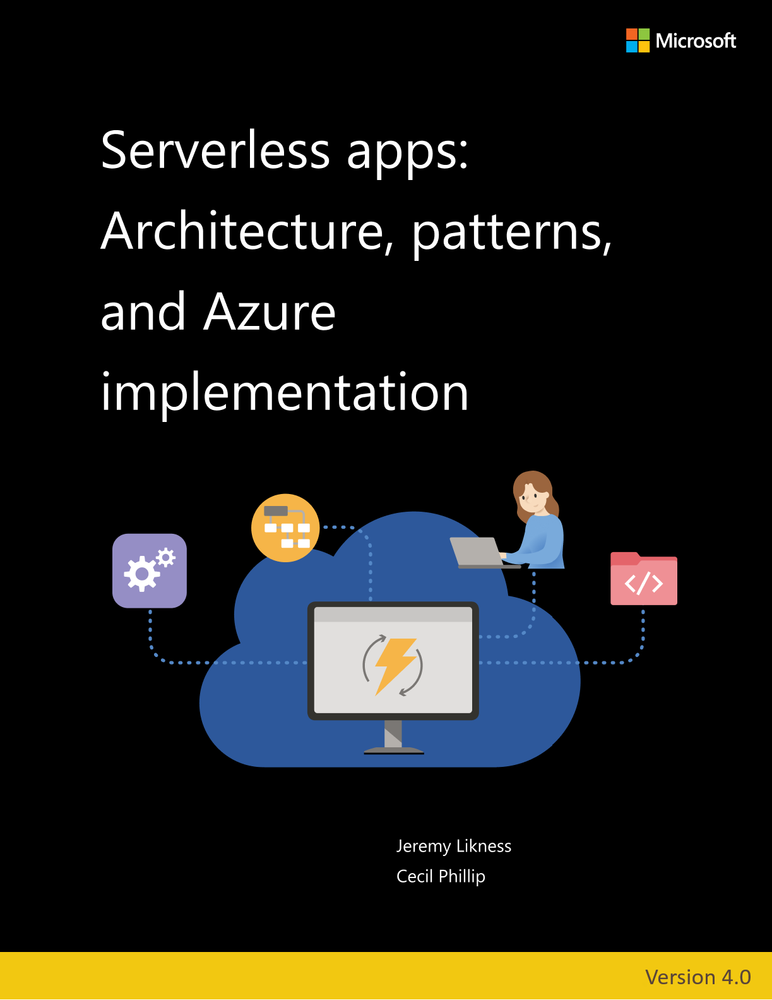
EDITION v4.0 - Updated to Azure Functions v4 DOWNLOAD available at: https://aka.ms/serverlessbookpdf PUBLISHED BY Microsoft Developer Division, .NET, and Visual Studio product teams A division of Microsoft Corporation One Microsoft Way Redmond, Washington 98052-6399 Copyright © 2018-2023 by Microsoft Corporation All rights reserved. No part of the contents of this book may be reproduced or transmitted in any form or by any means without the written permission of the publisher. This book is provided “as-is” and expresses the author’s views and opinions. The views, opinions and information expressed in this book, including URL and other Internet website references, may change without notice. Some examples depicted herein are provided for illustration only and are fictitious. No real association or connection is intended or should be inferred. Microsoft and the trademarks listed at https://www.microsoft.com on the “Trademarks” webpage are trademarks of the Microsoft group of companies. Mac and macOS are trademarks of Apple Inc. All other marks and logos are property of their respective owners. Author: Jeremy Likness, Senior .NET Data Program Manager, Microsoft Corp. Contributor: Cecil Phillip, Senior Cloud Advocate, Microsoft Corp. Editors: Bill Wagner, Senior Content Developer, Microsoft Corp. Maira Wenzel, Senior Content Developer, Microsoft Corp. Participants and reviewers: Steve Smith, Architect/Trainer, NimblePros.
Serverless is the evolution of cloud platforms in the direction of pure cloud native code. Serverless brings developers closer to business logic while insulating them from infrastructure concerns. It’s a pattern that doesn’t imply “no server” but rather, “less server.” Serverless code is event-driven. Code
may be triggered by anything from a traditional HTTP web request to a timer or the result of uploading a file. The infrastructure behind serverless allows for instant scale to meet elastic demands and offers micro-billing to truly “pay for what you use.” Serverless requires a new way of thinking and approach to building applications and isn’t the right solution for every problem. As a developer, you must decide:
• What are the pros and cons of serverless?
• Why should you consider serverless for your own applications?
• How can you build, test, deploy, and maintain your serverless code?
• Where does it make sense to migrate code to serverless in existing applications, and what is the best way to accomplish this transformation?
This guide focuses on cloud native development of applications that use serverless. The book highlights the benefits and exposes the potential drawbacks of developing serverless apps and provides a survey of serverless architectures. Many examples of how serverless can be used are illustrated along with various serverless design patterns.
This guide explains the components of the Azure serverless platform and focuses specifically on implementation of serverless using Azure Functions. You’ll learn about triggers and bindings as well as how to implement serverless apps that rely on state using durable functions. Finally, business examples and case studies will help provide context and a frame of reference to determine whether serverless is the right approach for your projects.
Serverless is the culmination of several iterations of cloud platforms. The evolution began with physical metal in the data center and progressed through Infrastructure as a Service (IaaS) and Platform as a Service (PaaS).
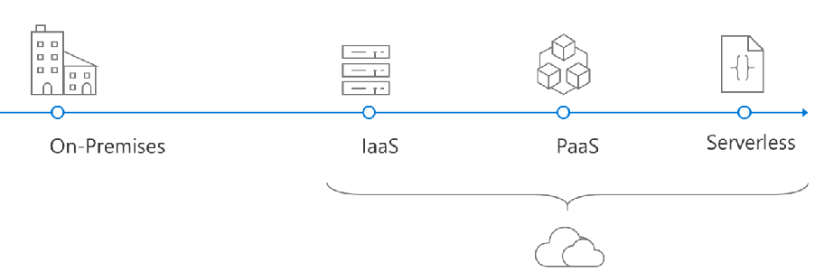
• What hardware should be installed?
• How is physical access to the machine secured?
• Does the data center require an Uninterruptible Power Supply (UPS)?
• Where are storage backups sent?
• Should there be redundant power?
The list goes on and the overhead was enormous. In many situations, IT departments were forced to deal with incredible waste. The waste was due to over-allocation of servers as backup machines for disaster recovery and standby servers to enable scale-out. Fortunately, the introduction of virtualization technology (like Hyper-V) with Virtual Machines (VMs) gave rise to Infrastructure as a Service (IaaS). Virtualized infrastructure allowed operations to set up a standard set of servers as the backbone, leading to a flexible environment capable of provisioning unique servers “on demand.” More important, virtualization set the stage for using the cloud to provide virtual machines “as a service.” Companies could easily get out of the business of worrying about redundant power or physical machines. Instead, they focused on the virtual environment.
IaaS still requires heavy overhead because operations is still responsible for various tasks. These tasks include:
• Patching and backing up servers.
• Installing packages.
• Keeping the operating system up-to-date.
• Monitoring the application.
The next evolution reduced the overhead by providing Platform as a Service (PaaS). With PaaS, the cloud provider handles operating systems, security patches, and even the required packages to support a specific platform. Instead of building a VM then configuring .NET and standing up Internet Information Services (IIS) servers, developers simply choose a “platform target” such as “web application” or “API endpoint” and deploy code directly. The infrastructure questions are reduced to:
• What size services are needed?
• How do the services scale out (add more servers or nodes)?
• How do the services scale up (increase the capacity of hosting servers or nodes)?
Serverless further abstracts servers by focusing on event-driven code. Instead of a platform, developers can focus on a microservice that does one thing. The two key questions for building the serverless code are:
• What triggers the code?
• What does the code do?
With serverless, infrastructure is abstracted. In some cases, the developer no longer worries about the host at all. Whether or not an instance of IIS, Kestrel, Apache, or some other web server is running to manage web requests, the developer focuses on an HTTP trigger. The trigger provides the standard, cross-platform payload for the request. The payload not only simplifies the development process, but facilitates testing and in some cases, makes the code easily portable across platforms.
Another feature of serverless is micro-billing. It’s common for web applications to host Web API endpoints. In traditional bare metal, IaaS and even PaaS implementations, the resources to host the APIs are paid for continuously. That means you pay to host the endpoints even when they aren’t being accessed. Often you’ll find one API is called more than others, so the entire system is scaled
based on supporting the popular endpoints. Serverless enables you to scale each endpoint independently and pay for usage, so no costs are incurred when the APIs aren’t being called. Migration may in many circumstances dramatically reduce the ongoing cost to support the endpoints.
This guide specifically emphasizes architecture approaches and design patterns and isn’t a deep dive into the implementation details of Azure Functions, Logic Apps, or other serverless platforms. This guide doesn’t cover, for example, advanced workflows with Logic Apps or features of Azure Functions such as configuring Cross-Origin Resource Sharing (CORS), applying custom domains, or uploading SSL certificates. These details are available through the online Azure Functions documentation.
• Azure Architecture center
• Best practices for cloud applications
Who should use the guide
This guide was written for developers and solution architects who want to build enterprise applications with .NET that may use serverless components either on premises or in the cloud. It’s useful to developers, architects, and technical decision makers interested in:
• Understanding the pros and cons of serverless development
• Learning how to approach serverless architecture
• Example implementations of serverless apps
The first part of this guide examines why serverless is a viable option by comparing several different architecture approaches. It examines both the technology and development lifecycle, because all aspects of software development are impacted by architecture decisions. The guide then examines use cases and design patterns and includes reference implementations using Azure Functions. Each section contains additional resources to learn more about a particular area. The guide concludes with resources for walkthroughs and hands-on exploration of serverless implementation.
The guide and related samples are constantly evolving, so your feedback is welcomed! If you have comments about how this guide can be improved, use the feedback section at the bottom of any page built on GitHub issues.
Architecture approaches....................................................................................................................................... 1 Architecture patterns..............................................................................................................................................................1 Monoliths....................................................................................................................................................................................1 N-Layer applications...............................................................................................................................................................2 Microservices.............................................................................................................................................................................3 Architecture deployment approaches.............................................................................................................................4
N-Tier applications .............................................................................................................................................................5 On-premises and Infrastructure as a Service (IaaS)...............................................................................................6 Platform as a Service (PaaS)............................................................................................................................................7 Software as a Service (SaaS) ...........................................................................................................................................7 Containers and Functions as a Service (FaaS)..........................................................................................................8 Serverless................................................................................................................................................................................9 Summary.............................................................................................................................................................................. 10 Recommended resources ............................................................................................................................................. 11
Serverless architecture.........................................................................................................................................12 Full serverless back end...................................................................................................................................................... 13 Monoliths and “starving the beast”............................................................................................................................... 13 Web apps................................................................................................................................................................................. 14 Mobile back ends.................................................................................................................................................................. 14 Internet of Things (IoT)....................................................................................................................................................... 15 Serverless architecture considerations......................................................................................................................... 16
Managing state................................................................................................................................................................. 16 Long-running processes................................................................................................................................................ 16 Startup time........................................................................................................................................................................ 17 Database updates and migrations ............................................................................................................................ 17 Scaling .................................................................................................................................................................................. 17 Monitoring, tracing, and logging............................................................................................................................... 18 Inter-service dependencies.......................................................................................................................................... 18
Managing failure and providing resiliency ............................................................................................................ 18 Versioning and green/blue deployments............................................................................................................... 19
Serverless design examples .............................................................................................................................................. 19 Scheduling .......................................................................................................................................................................... 19 Command and Query Responsibility Segregation (CQRS).............................................................................. 19 Event-based processing ................................................................................................................................................ 20 File triggers and transformations............................................................................................................................... 20 Asynchronous background processing and messaging................................................................................... 21 Web apps and APIs ......................................................................................................................................................... 21 Data pipeline...................................................................................................................................................................... 22 Stream processing ........................................................................................................................................................... 22 API gateway........................................................................................................................................................................ 23 Recommended resources ............................................................................................................................................. 23
Azure serverless platform...................................................................................................................................24
Azure Functions..................................................................................................................................................................... 24 Programming language support ............................................................................................................................... 25 App service plans ............................................................................................................................................................. 25 Create your first function.............................................................................................................................................. 25 Understand triggers and bindings ............................................................................................................................ 26
Telemetry with Application Insights.............................................................................................................................. 27 Azure Logic Apps.................................................................................................................................................................. 29 Event Grid................................................................................................................................................................................. 31
Scenarios.............................................................................................................................................................................. 32 Event Grid vs. other Azure messaging services.................................................................................................... 33 Performance targets........................................................................................................................................................ 34 Event Grid schema........................................................................................................................................................... 34 Azure resources ................................................................................................................................................................ 35 Conclusion .......................................................................................................................................................................... 36 Recommended resources ............................................................................................................................................. 36
Durable Azure Functions ....................................................................................................................................37 Triggering a stateful workflow......................................................................................................................................... 37 Working with the Orchestration client .................................................................................................................... 37
The orchestrator function ............................................................................................................................................. 38 The activity functions...................................................................................................................................................... 39
Recommended resources.................................................................................................................................................. 39 Orchestration patterns........................................................................................................................................................ 39
Function chaining............................................................................................................................................................. 40 Asynchronous HTTP APIs.............................................................................................................................................. 40 Monitoring.......................................................................................................................................................................... 41 Recommended resources ............................................................................................................................................. 42
Serverless business scenarios and use cases ..............................................................................................43 Big data processing.............................................................................................................................................................. 43 Create serverless applications: hands-on lab ............................................................................................................ 43 Customer reviews.................................................................................................................................................................. 43 File processing and validation ......................................................................................................................................... 44 Game data visualization..................................................................................................................................................... 44 GraphQL ................................................................................................................................................................................... 44 Internet of Things (IoT) reliable edge relay ................................................................................................................ 44 Microservices reference architecture ............................................................................................................................ 44 Serverless for mobile........................................................................................................................................................... 45 Serverless messaging .......................................................................................................................................................... 45 Recommended resources.................................................................................................................................................. 45
Conclusion................................................................................................................................................................46
CHAPTER |
|---|
1
Architecture approaches
Understanding existing approaches to architecting enterprise apps helps clarify the role played by serverless. There are many approaches and patterns that evolved over decades of software development, and all have their own pros and cons. In many cases, the ultimate solution may not involve deciding on a single approach but may integrate several approaches. Migration scenarios often involve shifting from one architecture approach to another through a hybrid approach.
This chapter provides an overview of both logical and physical architecture patterns for enterprise applications.
Modern business applications follow a variety of architecture patterns. This section represents a survey of common patterns. The patterns listed here aren’t necessarily all best practices, but illustrate different approaches.
For more information, see Azure application architecture guide.
Many business applications follow a monolith pattern. Legacy applications are often implemented as monoliths. In the monolith pattern, all application concerns are contained in a single deployment. Everything from user interface to database calls is included in the same codebase.
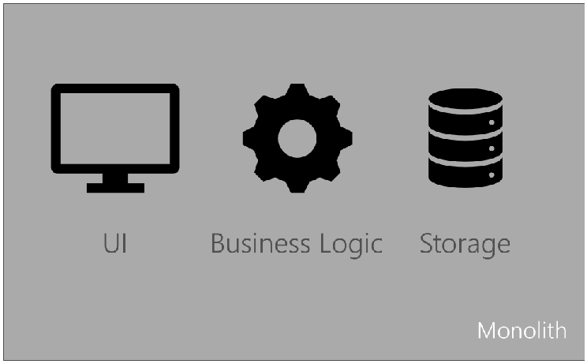
There are several advantages to the monolith approach. It’s often easy to pull down a single code base and start working. Ramp up time may be less, and creating test environments is as simple as providing a new copy. The monolith may be designed to include multiple components and applications.
Unfortunately, the monolith pattern tends to break down at scale. Major disadvantages of the monolith approach include:
• Difficult to work in parallel in the same code base.
• Any change, no matter how trivial, requires deploying a new version of the entire application.
• Refactoring potentially impacts the entire application.
• Often the only solution to scale is to create multiple, resource-intensive copies of the monolith.
• As systems expand or other systems are acquired, integration can be difficult.
• It may be difficult to test due to the need to configure the entire monolith.
• Code reuse is challenging and often other apps end up having their own copies of code.
Many businesses look to the cloud as an opportunity to migrate monolith applications and at the same time refactor them to more usable patterns. It’s common to break out the individual applications and components to allow them to be maintained, deployed, and scaled separately.
N-Layer applications
N-layer application partition application logic into specific layers. The most common layers include:
• User interface
• Business logic
• Data access
Other layers may include middleware, batch processing, and API. It’s important to note the layers are logical. Although they’re developed in isolation, they may all be deployed to the same target platform.
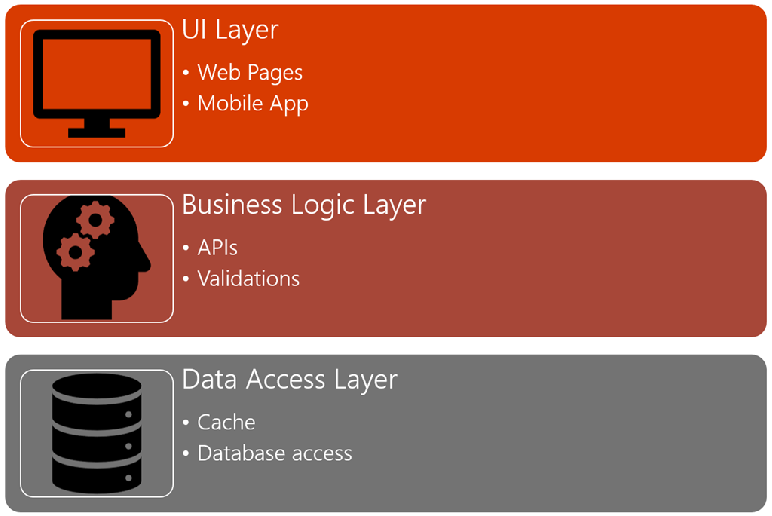
There are several advantages to the N-Layer approach, including:
• Refactoring is isolated to a layer.
• Teams can independently build, test, deploy, and maintain separate layers.
• Layers can be swapped out, for example the data layer may access multiple databases without requiring changes to the UI layer.
Serverless may be used to implement one or more layers.
Microservices architectures contain common characteristics that include:
• Applications are composed of several small services.
• Each service runs in its own process.
• Services are aligned around business domains.
• Services communicate over lightweight APIs, typically using HTTP as the transport.
• Services can be deployed and upgraded independently.
• Services aren’t dependent on a single data store.
• The system is designed with failure in mind, and the app may still run even when certain services fail.
Microservices don’t have to be mutually exclusive to other architecture approaches. For example, an N-Tier architecture may use microservices for the middle tier. It’s also possible to implement
microservices in a variety of ways, from virtual directories on IIS hosts to containers. The characteristics of microservices make them especially ideal for serverless implementations.
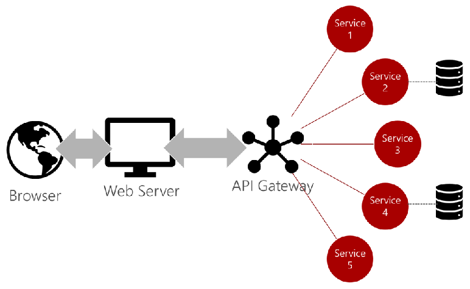
The pros of microservices architectures include:
• Refactoring is often isolated to a single service.
• Services can be upgraded independently of each other.
• Resiliency and elasticity can be tuned to the demands of individual services.
• Development can happen in parallel across disparate teams and platforms.
• It’s easier to write comprehensive tests for isolated services. Microservices come with their own challenges, including:
• Determining what services are available and how to call them.
• Managing the lifecycle of services.
• Understanding how services fit together in the overall application.
• Full system testing of calls made across disparate services.
Ultimately there are solutions to address all of these challenges, including tapping into the benefits of serverless that are discussed later.
Regardless of the architecture approach used to design a business application, the implementation, or deployment of those applications may vary. Businesses host applications on everything from physical hardware to serverless functions.
The N-Tier architecture pattern is a mature architecture and simply refers to applications that separate various logical layers into separate physical tiers. N-Tier architecture is a physical implementation of N-Layer architecture. The most common implementation of this architecture includes:
• A presentation tier, for example a web app.
• An API or data access tier, such as a REST API.
• A data tier, such as a SQL database.
N-tier solutions have the following characteristics:
• Projects are typically aligned with tiers.
• Testing may be approached differently by tier.
• Tiers provide layers of abstraction, for example the presentation tier is typically ignorant of the implementation details of the data tier.
• Typically, layers only interact with adjacent layers.
• Releases are often managed at the project, and therefore tier, level. A simple API change may require a new release of an entire middle tier.
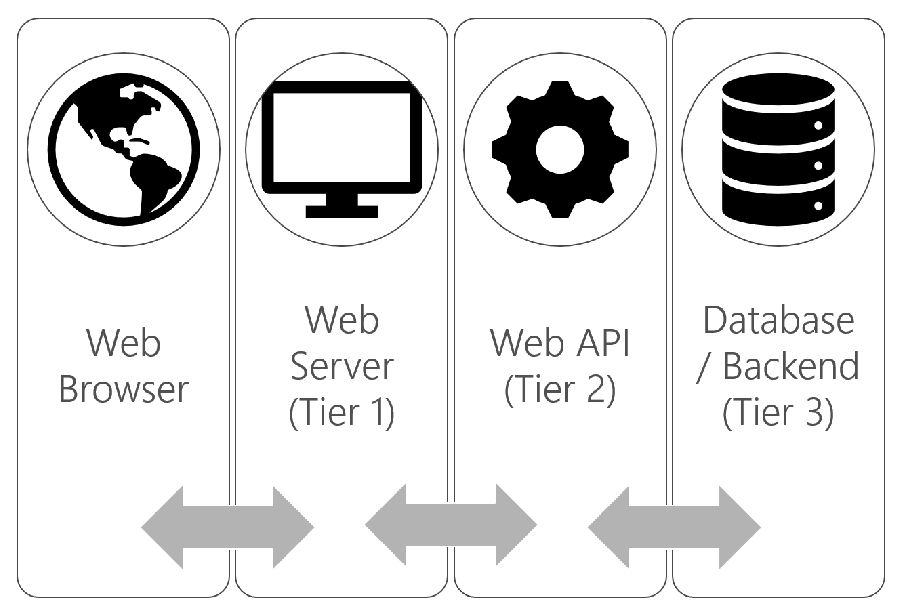
This approach provides several benefits, including:
• Isolation of the database (often the front end doesn’t have direct access to the database back end).
• Reuse of the API (for example, mobile, desktop, and web app clients can all reuse the same APIs).
• Ability to scale out tiers independent of each other.
• Refactoring isolation: one tier may be refactored without impacting other tiers.
On-premises and Infrastructure as a Service (IaaS)
The traditional approach to hosting applications requires buying hardware and managing all of the software installations, including the operating system. Originally this involved expensive data centers and physical hardware. The challenges that come with operating physical hardware are many, including:
• The need to buy excess for “just in case” or peak demand scenarios.
• Securing physical access to the hardware.
• Responsibility for hardware failure (such as disk failure).
• Cooling.
• Configuring routers and load balancers.
• Power redundancy.
• Securing software access.
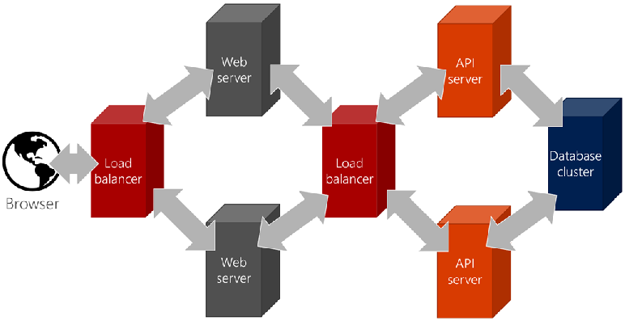
Virtualization of hardware, via “virtual machines” enables Infrastructure as a Service (IaaS). Host machines are effectively partitioned to provide resources to instances with allocations for their own memory, CPU, and storage. The team provisions the necessary VMs and configures the associated networks and access to storage.
For more information, see virtual machine N-tier reference architecture. Although virtualization and Infrastructure as a Service (IaaS) address many concerns, it still leaves much responsibility in the hands of the infrastructure team. The team maintains operating system versions, applies security patches, and installs third-party dependencies on the target machines. Apps often behave differently on production machines compared to the test environment. Issues arise due to different dependency versions and/or OS SKU levels. Although many organizations deploy N-Tier applications to these targets, many companies benefit from deploying to a more cloud native model
such as Platform as a Service. Architectures with microservices are more challenging because of the requirements to scale out for elasticity and resiliency.
For more information, see virtual machines.
Platform as a Service (PaaS) offers configured solutions that developers can plug into directly. PaaS is another term for managed hosting. It eliminates the need to manage the base operating system, security patches and in many cases any third-party dependencies. Examples of platforms include web applications, databases, and mobile back ends.
PaaS addresses the challenges common to IaaS. PaaS allows the developer to focus on the code or database schema rather than how it gets deployed. Benefits of PaaS include:
• Pay for use models that eliminate the overhead of investing in idle machines.
• Direct deployment and improved DevOps, continuous integration (CI), and continuous delivery (CD) pipelines.
• Automatic upgrades, updates, and security patches.
• Push-button scale out and scale up (elastic scale).
The main disadvantage of PaaS traditionally has been vendor lock-in. For example, some PaaS providers only support ASP.NET, Node.js, or other specific languages and platforms. Products like Azure App Service have evolved to address multiple platforms and support a variety of languages and frameworks for hosting web apps.
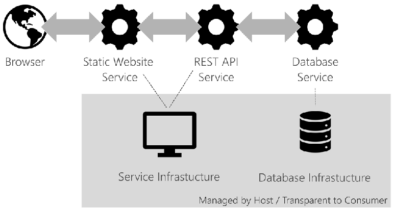
Software as a Service or SaaS is centrally hosted and available without local installation or provisioning. SaaS often is hosted on top of PaaS as a platform for deploying software. SaaS provides services to run and connect with existing software. SaaS is often industry and vertical specific. SaaS is often licensed and typically provides a client/server model. Most modern SaaS offerings use web-
based apps for the client. Companies typically consider SaaS as a business solution to license offerings. It isn’t often implemented as architecture consideration for scalability and maintainability of an application. Indeed, most SaaS solutions are built on IaaS, PaaS, and/or serverless back ends.
Learn more about SaaS through a sample application.
Containers are an interesting solution that enables PaaS-like benefits without the IaaS overhead. A container is essentially a runtime that contains the bare essentials needed to run a unique application. The kernel or core part of the host operating system and services such as storage are shared across a host. The shared kernel enables containers to be lightweight (some are mere megabytes in size, compared to the gigabyte size of typical virtual machines). With hosts already running, containers can be started quickly, facilitating high availability. The ability to spin up containers quickly also provides extra layers of resiliency. Docker is one of the more popular implementations of containers.
Benefits of containers include:
• Lightweight and portable
• Self-contained so no need to install dependencies
• Provide a consistent environment regardless of the host (runs exactly same on a laptop as on a cloud server)
• Can be provisioned quickly for scale-out
• Can be restarted quickly to recover from failure
A container runs on a container host (that in turn may run on a bare metal machine or a virtual machine). Multiple containers or instances of the same containers may run on a single host. For true failover and resiliency, containers must be scaled across hosts.
For more information about Docker containers, see What is Docker. Managing containers across hosts typically requires an orchestration tool such as Kubernetes. Configuring and managing orchestration solutions may add additional overhead and complexity to projects. Fortunately, many cloud providers provide orchestration services through PaaS solutions to simplify the management of containers. The following image illustrates an example Kubernetes installation. Nodes in the installation address scale out and failover. They run Docker container instances that are managed by the primary server. The kubelet is the client that relays commands from Kubernetes to Docker.
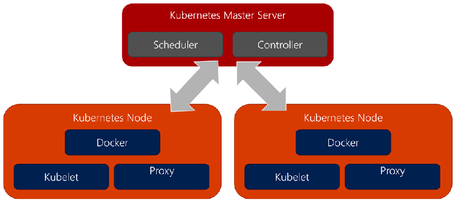
For more information about orchestration, see Kubernetes on Azure. Functions as a Service (FaaS) is a specialized container service that is similar to serverless. A specific implementation of FaaS, called OpenFaaS, sits on top of containers to provide serverless capabilities. OpenFaaS provides templates that package all of the container dependencies necessary to run a piece of code. Using templates simplifies the process of deploying code as a functional unit. OpenFaaS targets architectures that already include containers and orchestrators because it can use the existing infrastructure. Although it provides serverless functionality, it specifically requires you to use Docker and an orchestrator.
A serverless architecture provides a clear separation between the code and its hosting environment. You implement code in a function that is invoked by a trigger. After that function exits, all its needed resources may be freed. The trigger might be manual, a timed process, an HTTP request, or a file upload. The result of the trigger is the execution of code. Although serverless platforms vary, most provide access to pre-defined APIs and bindings to streamline tasks such as writing to a database or queueing results.
Serverless is an architecture that relies heavily on abstracting away the host environment to focus on code. It can be thought of as less server.
Container solutions provide developers existing build scripts to publish code to serverless-ready images. Other implementations use existing PaaS solutions to provide a scalable architecture.
The abstraction means the DevOps team doesn’t have to provision or manage servers, nor specific containers. The serverless platform hosts code, either as script or packaged executables built with a related SDK, and allocates the necessary resources for the code to scale.
The following diagram illustrates four serverless components. An HTTP request causes the Checkout API code to run. The Checkout API inserts code into a database, and the insert triggers several other functions to run to perform tasks like computing tasks and fulfilling the order.
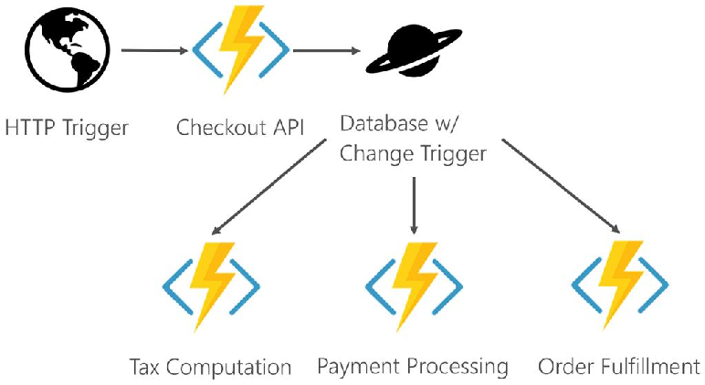
The advantages of serverless include:
• High density. Many instances of the same serverless code can run on the same host compared to containers or virtual machines. The instances scale across multiple hosts addressing scale out and resiliency.
• Micro-billing. Most serverless providers bill based on serverless executions, enabling massive cost savings in certain scenarios.
• Instant scale. Serverless can scale to match workloads automatically and quickly.
• Faster time to market. Developers focus on code and deploy directly to the serverless platform. Components can be released independently of each other.
Serverless is most often discussed in the context of compute, but can also apply to data. For example, Azure SQL and Cosmos DB both provide cloud databases that don’t require you to configure host machines or clusters. This book focuses on serverless compute.
IaaS |
PaaS |
Container |
Serverless |
|
|---|---|---|---|---|
Scale |
VM |
Instance |
App |
Function |
Abstracts |
Hardware |
Platform |
OS Host |
Runtime |
Unit |
VM |
Project |
Image |
Code |
IaaS |
PaaS |
Container |
Serverless |
|
|---|---|---|---|---|
Lifetime |
Months |
Days to Months |
Minutes to Days |
Milliseconds to Minutes |
Responsibility |
Applications, dependencies, runtime, and operating system |
Applications and dependencies |
Applications, dependencies, and runtime |
Function |
• Scale refers to the unit that is used to scale the application
• Abstracts refers to the layer that is abstracted by the implementation
• Unit refers to the scope of what is deployed
• Lifetime refers to the typical runtime of a specific instance
• Responsibility refers to the overhead to build, deploy, and maintain the application The next chapter will focus on serverless architecture, use cases, and design patterns.
Recommended resources
• Azure application architecture guide
• Azure Cosmos DB
• Azure SQL
• N-Tier architecture pattern
• Kubernetes on Azure
• Microservices
• Virtual machine N-tier reference architecture
• Virtual machines
• What is Docker?
• Wingtip Tickets SaaS application
CHAPTER |
|---|
2
Serverless architecture
There are many approaches to using serverless architectures. This chapter explores examples of common architectures that integrate serverless. It also covers concerns that may pose additional challenges or require extra consideration when implementing serverless. Finally, several design examples are provided that illustrate various serverless use cases.
Serverless hosts often use an existing container-based or PaaS layer to manage the serverless instances. For example, Azure Functions is based on Azure App Service. The App Service is used to scale out instances and manage the runtime that executes Azure Functions code. For Windows-based functions, the host runs as PaaS and scales out the .NET runtime. For Linux-based functions, the host leverages containers.
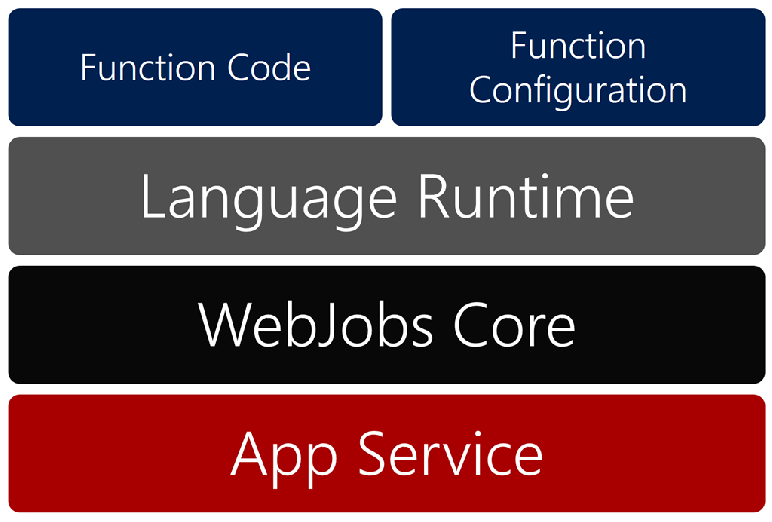
The WebJobs Core provides an execution context for the function. The Language Runtime runs scripts, executes libraries and hosts the framework for the target language. For example, Node.js is used to run JavaScript functions and the .NET Framework is used to run C# functions. You’ll learn more about language and platform options later in this chapter.
Some projects may benefit from taking an “all-in” approach to serverless. Applications that rely heavily on microservices may implement all microservices using serverless technology. The majority of apps are hybrid, following an N-tier design and using serverless for the components that make sense
because the components are modular and independently scalable. To help make sense of these scenarios, this section walks through some common architecture examples that use serverless.
The full serverless back end is ideal for several types of scenarios, especially when building new or “green field” applications. An application with a large surface area of APIs may benefit from implementing each API as a serverless function. Apps that are based on microservices architecture are another example that could be implemented as a full serverless back end. The microservices communicate over various protocols with each other. Specific scenarios include:
• API-based SaaS products (example: financial payments processor).
• Message-driven applications (example: device monitoring solution).
• Apps focused on integration between services (example: airline booking application).
• Processes that run periodically (example: timer-based database clean-up).
• Apps focused on data transformation (example: import triggered by file upload).
• Extract Transform and Load (ETL) processes. There are other, more specific use cases that are covered later in this document.
A common challenge is migrating an existing monolithic application to the cloud. The least risky approach is to “lift and shift” entirely onto virtual machines. Many shops prefer to use the migration as an opportunity to modernize their code base. A practical approach to migration is called “starving the beast.” In this scenario, the monolith is migrated “as is” to start with. Then, selected services are modernized. In some cases, the signature of the service is identical to the original: it simply is hosted as a function. Clients are updated to use the new service rather than the monolith endpoint. In the interim, steps such as database replication enable microservices to host their own storage even when transactions are still handled by the monolith. Eventually, all clients are migrated onto the new services. The monolith is “starved” (its services no longer called) until all functionality has been replaced. The combination of serverless and proxies can facilitate much of this migration.
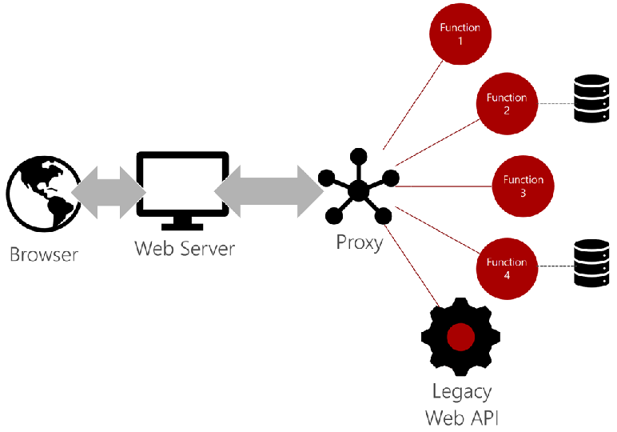
To learn more about this approach, watch the video: Bring your app to the cloud with serverless Azure Functions.
Web apps are great candidates for serverless applications. There are two common approaches to web apps today: server-driven, and client-driven (such as Single Page Application or SPA). Server-driven web apps typically use a middleware layer to issue API calls to render the web UI. SPA applications make REST API calls directly from the browser. In both scenarios, serverless can accommodate the middleware or REST API request by providing the necessary business logic. A common architecture is to stand up a lightweight static web server. The Single Page Application (SPA) serves HTML, CSS, JavaScript, and other browser assets. The web app then connects to a microservices back end.
The event-driven paradigm of serverless apps makes them ideal as mobile back ends. The mobile device triggers the events and the serverless code executes to satisfy requests. Taking advantage of a serverless model enables developers to enhance business logic without having to deploy a full application update. The serverless approach also enables teams to share endpoints and work in parallel.
Mobile developers can build business logic without becoming experts on the server side. Traditionally, mobile apps connected to on-premises services. Building the service layer required understanding the server platform and programming paradigm. Developers worked with operations to provision servers
and configure them appropriately. Sometimes days or even weeks were spent on building a deployment pipeline. All of these challenges are addressed by serverless.
Serverless abstracts the server-side dependencies and enables the developer to focus on business logic. For example, a mobile developer who builds apps using a JavaScript framework can build serverless functions with JavaScript as well. The serverless host manages the operating system, a Node.js instance to host the code, package dependencies, and more. The developer is provided a simple set of inputs and a standard template for outputs. They then can focus on building and testing the business logic. They’re therefore able to use existing skills to build the back-end logic for the mobile app without having to learn new platforms or become a “server-side developer.”
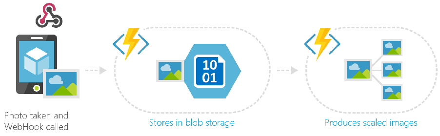
Most cloud providers offer mobile-based serverless products that simplify the entire mobile development lifecycle. The products may automate the provisioning of databases to persist data, handle DevOps concerns, provide cloud-based builds and testing frameworks and the ability to script business processes using the developer’s preferred language. Following a mobile-centric serverless approach can streamline the process. Serverless removes the tremendous overhead of provisioning, configuring, and maintaining servers for the mobile back end.
IoT refers to physical objects that are networked together. They’re sometimes referred to as “connected devices” or “smart devices.” Everything from cars and vending machines may be connected and send information ranging from inventory to sensor data such as temperature and humidity. In the enterprise, IoT provides business process improvements through monitoring and automation. IoT data may be used to regulate the climate in a large warehouse or track inventory through the supply chain. IoT can sense chemical spills and call the fire department when smoke is detected.
The sheer volume of devices and information often dictates an event-driven architecture to route and process messages. Serverless is an ideal solution for several reasons:
• Enables scale as the volume of devices and data increases.
• Accommodates adding new endpoints to support new devices and sensors.
• Facilitates independent versioning so developers can update the business logic for a specific device without having to deploy the entire system.
• Resiliency and less downtime.
The pervasiveness of IoT has resulted in several serverless products that focus specifically on IoT concerns, such as Azure IoT Hub. Serverless automates tasks such as device registration, policy enforcement, tracking, and even deployment of code to devices at the edge. The edge refers to devices like sensors and actuators that are connected to, but not an active part of, the Internet.
Adopting a serverless architecture does come with certain challenges. This section explores some of the more common considerations to be aware of. All of these challenges have solutions. As with all architecture choices, the decision to go serverless should be made only after carefully considering the pros and cons. Depending on the needs of your application, you may decide a serverless implementation isn’t the right solution for certain components.
Serverless functions, as with microservices in general, are stateless by default. Avoiding state enables serverless to be ephemeral, to scale out, and to provide resiliency without a central point of failure. In some circumstances, business processes require state. If your process requires state, you have two options. You can adopt a model other than serverless, or interact with a separate service that provides state. Adding state can complicate the solution and make it harder to scale, and potentially create a single point of failure. Carefully consider whether your function absolutely requires state. If the answer is “yes,” determine whether it still makes sense to implement it with serverless.
There are several solutions to adopt state without compromising the benefits of serverless. Some of the more popular solutions include:
• Use a temporary data store or distributed cache, like Redis
• Store state in a database, like SQL or CosmosDB
• Handle state through a workflow engine like durable functions
The bottom line is that you should be aware of the need for any state management within processes you’re considering to implement with serverless.
Many benefits of serverless rely on the processes being ephemeral. Short run times make it easier for the serverless provider to free up resources as functions end and share functions across hosts. Most cloud providers limit the total time your function can run to around 10 minutes. If your process may take longer, you might consider an alternative implementation.
There are a few exceptions and solutions. One solution may be to break your process into smaller components that individually take less time to run. If your process runs long because of dependencies, you can also consider an asynchronous workflow using a solution like durable functions. Durable functions pause and maintain the state of your process while it’s waiting on an external process to finish. Asynchronous handling reduces the time the actual process runs.
One potential concern with serverless implementations is startup time. To conserve resources, many serverless providers create infrastructure “on demand.” When a serverless function is triggered after a period of time, the resources to host the function may need to be created or restarted. In some situations, cold starts may result in delays of several seconds. Startup time varies across providers and service levels. There are a few approaches to address startup time if it’s important to minimize for the success of the app.
• Some providers allow users to pay for service levels that guarantee infrastructure is “always on”.
• Implement a keep-alive mechanism (ping the endpoint to keep it “awake”).
• Use orchestration like Kubernetes with a containerized function approach (the host is already running so spinning up new instances is extremely fast).
An advantage of serverless code is that you can release new functions without having to redeploy the entire application. This advantage can become a disadvantage when there’s a relational database involved. Changes to database schemas are difficult to synchronize with serverless updates. Additional challenges are posed when things go wrong and the changes must be rolled back. Data integrity is one reason that a best practice for microservices and serverless functions is that they own their own data. It is possible to deploy changes as a single unit of compute and data. The reality is that many legacy systems feature a large back-end database that must be reconciled with the serverless architecture.
A popular approach to solve schema versioning is to never modify existing properties and columns, but instead add new information. For example, consider a change to move from a Boolean “completed” flag for a todo list to a “completed date.” Instead of removing the old field, the database change will:
1. Add a new “completed date” field.
2. Transform the “completed” Boolean field to a computed function that evaluates whether the completed date is after the current date.
3. Add a trigger to set the completed date to the current date when the completed Boolean is set to true.
The sequence of changes ensures that legacy code continues to run “as is” while newer serverless functions can take advantage of the new field.
For more information about data in serverless architectures, see Challenges and solutions for distributed data management.
It’s a common misconception that serverless means “no server.” It’s in fact “less server.” The fact there is a backing infrastructure is important to understand when it comes to scaling. Most serverless platforms provide a set of controls to handle how the infrastructure should scale when event density increases. You can choose from a variety of options, but your strategy may vary depending on the
function. Furthermore, functions are typically run under a related host, so that functions on the same host have the same scale options. Therefore it is necessary to organize and strategize which functions are hosted together based on scale requirements.
Rules often specify how to scale-up (increase the host resources) and scale-out (increase the number of host instances) based on varying parameters. Triggers for scales may include schedule, request rates, CPU utilization, and memory usage. Higher performance often comes at a greater cost. The less expensive, consumption-based approaches may not scale as quickly when the request rate suddenly increases. There is a trade-off between paying up front “insurance cost” versus paying strictly “as you go” and risking slower responses due to sudden increases in demand.
An often overlooked aspect of DevOps is monitoring applications once deployed. It’s important to have a strategy for monitoring serverless functions. The biggest challenge is often correlation, or recognizing when a user calls multiple functions as part of the same interaction. Most serverless platforms allow console logging that can be imported into third-party tools. There are also options to automate collection of telemetry, generate and track correlation IDs, and monitor specific actions to provide detailed insights. Azure provides the advanced Application Insights platform for monitoring and analytics.
A serverless architecture may include functions that rely on other functions. In fact, it isn’t uncommon in a serverless architecture to have multiple services call each other as part of an interaction or distributed transaction. To avoid strong coupling, it’s recommended that services don’t reference each other directly. When the endpoint for a service needs to change, direct references could result in major refactoring. A suggested solution is to provide a service discovery mechanism, such as a registry, that provides the appropriate end point for a request type. Another solution is to leverage messaging services like queues or topics for communication between services.
It’s also important to consider the circuit-breaker pattern: If, for some reason, a service continues to fail, it isn’t advisable to call that service repeatedly. Instead, an alternative service is called or a message returned until the health of the dependent service is re-established. The serverless architecture needs to take into account the strategy for resolving and managing inter-service dependencies.
To continue the circuit-breaker pattern, services need to be fault tolerant and resilient. Fault tolerance refers to the ability of your application to continue running even after unexpected exceptions or invalid states are encountered. Fault tolerance is typically a function of the code itself and how it’s written to handle exceptions. Resiliency refers to how capable the app is at recovering from failures. Resiliency is often managed by the serverless platform. The platform should be able to spin up a new serverless function instance when the existing one fails. The platform should also be intelligent enough to stop spinning up new instances when every new instance fails.
For more information, see Implementing the Circuit Breaker pattern.
A major benefit of serverless is the ability to upgrade a specific function without having to redeploy the entire application. For upgrades to be successful, functions must be versioned so that services calling them are routed to the correct version of code. A strategy for deploying new versions is also important. A common approach is to use “green/blue deployments.” The green deployment is the current function. A new “blue” version is deployed to production and tested. When testing passes, the green and blue versions are swapped so the new version comes live. If any issues are encountered, they can be swapped back. Supporting versioning and green/blue deployments requires a combination of authoring the functions to accommodate version changes and working with the serverless platform to handle deployments.
There are many design patterns that exist for serverless. This section captures some common scenarios that use serverless. What all of the examples have in common is the fundamental combination of an event trigger and business logic.
Scheduling tasks is a common function. The following diagram shows a legacy database that doesn’t have appropriate integrity checks. The database must be scrubbed periodically. The serverless function finds invalid data and cleans it. The trigger is a timer that runs the code on a schedule.
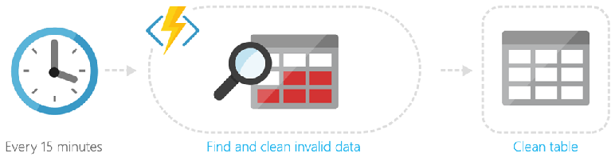
Command and Query Responsibility Segregation (CQRS) is a pattern that provides different interfaces for reading (or querying) data and operations that modify data. It addresses several common problems. In traditional Create Read Update Delete (CRUD) based systems, conflicts can arise from high volume of both reads and writes to the same data store. Locking may frequently occur and dramatically slow down reads. Often, data is presented as a composite of several domain objects and read operations must combine data from different entities.
Using CQRS, a read might involve a special “flattened” entity that models data the way it’s consumed. The read is handled differently than how it’s stored. For example, although the database may store a contact as a header record with a child address record, the read could involve an entity with both
header and address properties. There are myriad approaches to creating the read model. It might be materialized from views. Update operations could be encapsulated as isolated events that then trigger updates to two different models. Separate models exist for reading and writing.
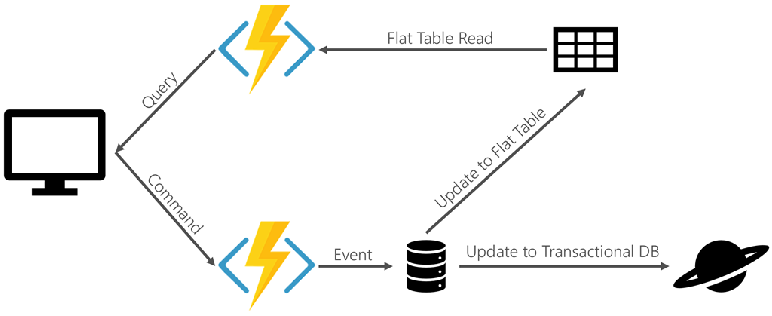
Serverless can accommodate the CQRS pattern by providing the segregated endpoints. One serverless function accommodates queries or reads, and a different serverless function or set of functions handles update operations. A serverless function may also be responsible for keeping the read model up-to-date, and can be triggered by the database’s change feed. Front-end development is simplified to connecting to the necessary endpoints. Processing of events is handled on the back end. This model also scales well for large projects because different teams may work on different operations.
In message-based systems, events are often collected in queues or publisher/subscriber topics to be acted upon. These events can trigger serverless functions to execute a piece of business logic. An example of event-based processing is event-sourced systems. An “event” is raised to mark a task as complete. A serverless function triggered by the event updates the appropriate database document. A second serverless function may use the event to update the read model for the system. Azure Event Grid provides a way to integrate events with functions as subscribers.
Events are informational messages. For more information, see Event Sourcing pattern.
Extract, Transform, and Load (ETL) is a common business function. Serverless is a great solution for ETL because it allows code to be triggered as part of a pipeline. Individual code components can address various aspects. One serverless function may download the file, another applies the transformation, and another loads the data. The code can be tested and deployed independently, making it easier to maintain and scale where needed.
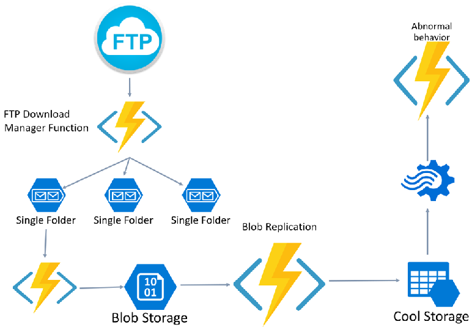
In the diagram, “cool storage” provides data that is parsed in Azure Stream Analytics. Any issues encountered in the data stream trigger an Azure Function to address the anomaly.
Asynchronous messaging and background processing allow applications to kick off processes without having to wait. An example of asynchronous processing is an OCR app. An image is submitted and queued for processing. Scanning the image to extract text may take time, and once it’s finished a notification is sent. Serverless can handle both the invocation and the result in this scenario.
A popular scenario for serverless is N-tier applications, most commonly ones where the UI layer is a web app. The popularity of Single Page Applications (SPA) has surged recently. SPA apps render a single page, then rely on API calls and the returned data to dynamically render new UI without reloading a full page. Client-side rendering provides a much faster, more responsive application to the end user.
Serverless endpoints triggered by HTTP calls can be used to handle the API requests. For example, an ad services company may call a serverless function with user profile information to request custom advertising. The serverless function returns the custom ad and the web page renders it.
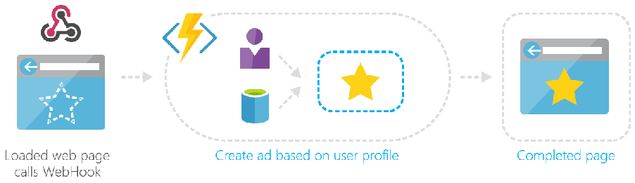
Serverless functions can be used to facilitate a data pipeline. In this example, a file triggers a function to translate data in a CSV file to data rows in a table. The organized table allows a Power BI dashboard to present analytics to the end user.
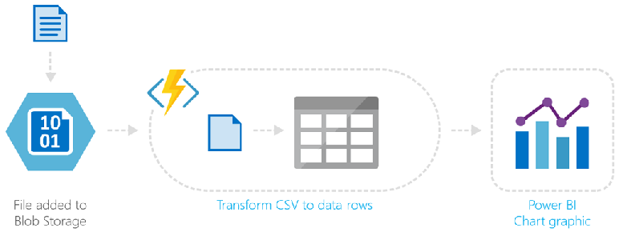
Devices and sensors often generate streams of data that must be processed in real time. There are a number of technologies that can capture messages and streams from Event Hubs and IoT Hub to Service Bus. Regardless of transport, serverless is an ideal mechanism for processing the messages and streams of data as they come in. Serverless can scale quickly to meet the demand of large volumes of data. The serverless code can apply business logic to parse the data and output in a structured format for action and analytics.
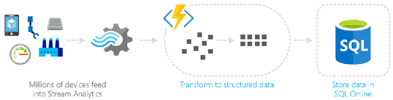
An API gateway provides a single point of entry for clients and then intelligently routes requests to back-end services. It’s useful to manage large sets of services. It can also handle versioning and simplify development by easily connecting clients to disparate environments. Serverless can handle back-end scaling of individual microservices while presenting a single front end via an API gateway.
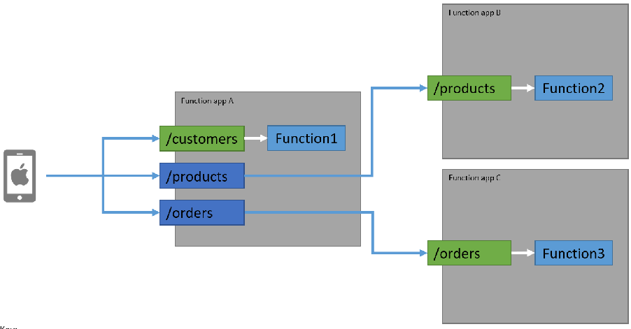
• Azure Event Grid
• Azure IoT Hub
• Challenges and solutions for distributed data management
• Designing microservices: identifying microservice boundaries
• Event Hubs
• Event Sourcing pattern
• Implementing the Circuit Breaker pattern
• IoT Hub
• Service Bus
• Working with the change feed support in Azure Cosmos DB
3CHAPTER |
|---|
The Azure serverless platform includes Azure Functions, Logic Apps, and Event Grid. These services work together and connect with myriad other resources. The serverless platform works with everything from databases and storage to analytics and machine learning/artificial intelligence. You can also use Application Insights, a serverless platform for capturing diagnostic traces and telemetry. Application Insights are available to applications of all types (desktop, mobile, or web) as well as serverless implementations. The platform is visualized in the following diagram:
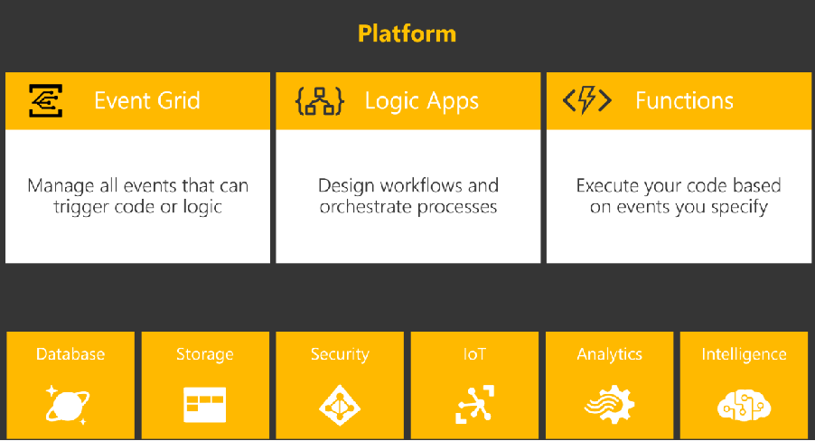
This chapter breaks down the fundamentals of each component.
Azure Functions provide a serverless compute experience. A function is invoked by a trigger (such as access to an HTTP endpoint or a timer) and executes a block of code or business logic. Functions also support specialized bindings that connect to resources like storage and queues.
The current runtime version 4.0 supports cross-platform .NET 7.0 applications. Additional languages besides C# such as JavaScript, F#, and Java are supported. Functions created in the portal provide a rich scripting syntax. Functions created as standalone projects can be deployed with full platform support and capabilities.
For more information, see Azure Functions documentation.
The following languages are all supported in general availability (GA).
Language |
Supported runtimes for 4.x |
|---|---|
C# |
.NET 6.0, 7.0, .NET Framework 4.8 |
JavaScript |
Node 14, 16, 18 |
F# |
.NET 6.0, 7.0 |
Java |
Java 8, 11, 17 |
Python |
Python 3.7, 3.8, 3.9, 3.10 |
TypeScript |
Node 14, 16, 18 (via JavaScript) |
PowerShell |
PowerShell Core 7.2 |
For more information on other runtime versions, see Supported languages.
Functions are backed by an app service plan. The plan defines the resources used by the functions app. You can assign plans to a region, determine the size and number of virtual machines that will be used, and pick a pricing tier. For a true serverless approach, function apps may use the consumption plan. The consumption plan will scale the back end automatically based on load.
Another hosting option for function apps is the Premium plan. This plan provides an “always on” instance to avoid cold start, supports advanced features like VNet connectivity, and runs on premium hardware.
For more information, see App service plans.
There are three common ways you can create function apps.
• Script functions in the portal.
• Create the necessary resources using the Azure CLI.
• Build functions locally using your favorite IDE and publish them to Azure.
For more information on creating a scripted function in the portal, see Create your first function in the Azure portal.
To build from the Azure CLI, see Create your first function using the Azure CLI. To create a function from Visual Studio, see Create your first function using Visual Studio.
Functions are invoked by a trigger and can have exactly one. In addition to invoking the function, certain triggers also serve as bindings. You may also define multiple bindings in addition to the trigger. Bindings provide a declarative way to connect data to your code. They can be passed in (input) or receive data (output). Triggers and bindings make functions easy to work with. Bindings remove the overhead of manually creating database or file system connections. All of the information needed for the bindings is contained in a special functions.json file for scripts or declared with attributes in code.
Some common triggers include:
• Blob Storage: invoke your function when a file or folder is uploaded or changed in storage.
• HTTP: invoke your function like a REST API.
• Queue: invoke your function when items exist in a queue.
• Timer: invoke your function on a regular cadence. Examples of bindings include:
• CosmosDB: easily connect to the database to load or save files.
• Table Storage: work with key/value storage from your function app.
• Queue Storage: easily retrieve items from a queue, or place new items on the queue. The following example functions.json file defines a trigger and a binding:
{ "bindings": [ { "name": "myBlob", "type": "blobTrigger", "direction": "in", "path": "images/{name}", "connection": "AzureWebJobsStorage" }, { "name": "$return", "type": "queue", "direction": "out", "queueName": "images", "connection": "AzureWebJobsStorage" } ], "disabled": false } |
|---|
In this example, the function is triggered by a change to blob storage in the images container. The information for the file is passed in, so the trigger also acts as a binding. Another binding exists to put information onto a queue named images.
Here is the C# script for the function:
public static string Run(Stream myBlob, string name, TraceWriter log) { log.Info($"C# Blob trigger function Processed blob\n Name:{name} \n Size: {myBlob.Length} Bytes"); return name; } |
|---|
The example is a simple function that takes the name of the file that was modified or uploaded to blob storage, and places it on a queue for later processing.
For a full list of triggers and bindings, see Azure Functions triggers and bindings concepts.
Application Insights is a serverless diagnostics platform that enables developers to detect, triage, and diagnose issues in web apps, mobile apps, desktop apps, and microservices. You can turn on Application Insights for function apps simply by flipping a switch in the portal. Application Insights provides all of these capabilities without you having to configure a server or set up your own database. All of Application Insights’ capabilities are provided as a service that automatically integrates with your apps.
• Create custom charts and alerts based on metrics such as number of function invocations, the time it takes to run a function, and exceptions
• Analyze failures and server exceptions
• Drill into performance by operation and measure the time it takes to call third-party dependencies
• Monitor CPU usage, memory, and rates across all servers that host your function apps
• View a live stream of metrics including request count and latency for your function apps
• Use Analytics to search, query, and create custom charts over your function data
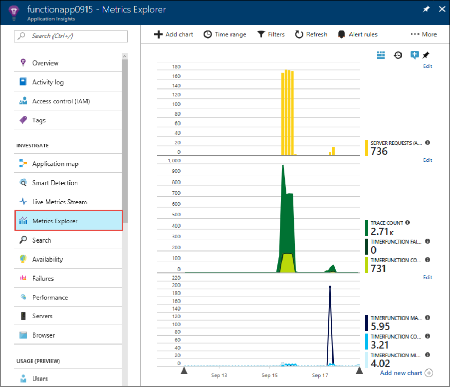
In addition to built-in telemetry, it’s also possible to generate custom telemetry. The following code snippet creates a custom telemetry client using the instrumentation key set for the function app:
public static TelemetryClient telemetry = new TelemetryClient() { InstrumentationKey = Environment.GetEnvironmentVariable("APPINSIGHTS_INSTRUMENTATIONKEY") }; |
|---|
The following code measures how long it takes to insert a new row into an Azure Table Storage instance:
var startTime = DateTime.UtcNow; var timer = System.Diagnostics.Stopwatch.StartNew(); await tableClient.AddEntityAsync(entry); telemetry.TrackDependency("AzureTableStorageInsert", "Insert", startTime, timer.Elapsed, true); |
|---|
The resulting performance graph is shown:
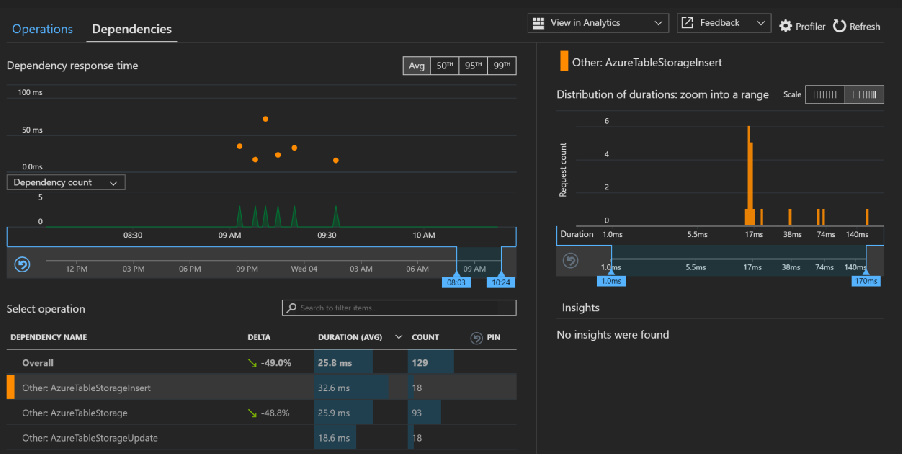
The custom telemetry reveals the average time to insert a new row is 32.6 milliseconds. Application Insights provides a powerful, convenient way to log detailed telemetry about your serverless applications. You have full control over the level of tracing and logging that is provided. You can track custom statistics such as events, dependencies, and page view. Finally, the powerful analytics enable you to write queries that ask important questions and generate charts and advanced insights. For more information, see Monitor Azure Functions.
Azure Logic Apps provides a serverless engine to build automated workflows to integrate apps and data between cloud services and on-premises systems. You build workflows using a visual designer. You can trigger workflows based on events or timers and leverage connectors to integration applications and facilitate business-to-business (B2B) communication. Logic Apps integrates seamlessly with Azure Functions.
Logic Apps can do more than just connect your cloud services (like functions) with cloud resources (like queues and databases). You can also orchestrate on-premises workflows with the on-premises gateway. For example, you can use the Logic App to trigger an on-premises SQL stored procedure in response to a cloud-based event or conditional logic in your workflow. Learn more about Connecting to on-premises data sources with Azure On-premises Data Gateway.
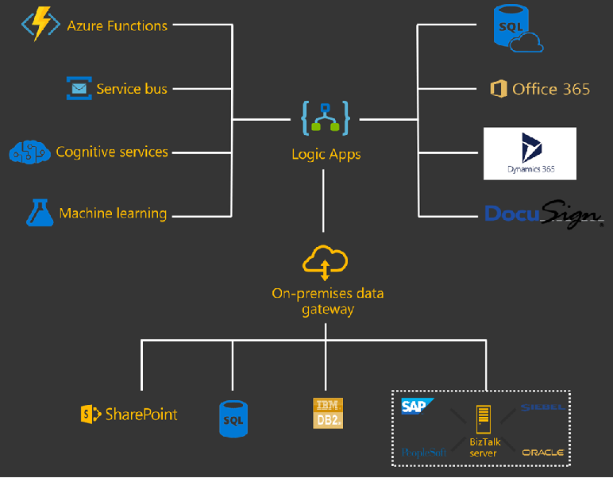
Like Azure Functions, you kick off Logic App workflows with a trigger. There are many triggers for you to choose from. The following capture shows just a few of the more popular ones out of hundreds that are available.
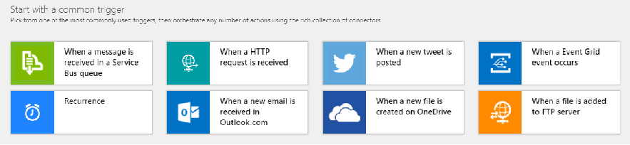
Once the app is triggered, you can use the visual designer to build out steps, loops, conditions, and actions. Any data ingested in a previous step is available for you to use in subsequent steps. The following workflow loads URLs from a CosmosDB database. It finds the ones with a host of t.co then searches for them on Twitter. If it finds corresponding tweets, it updates the documents with the related tweets by calling a function.
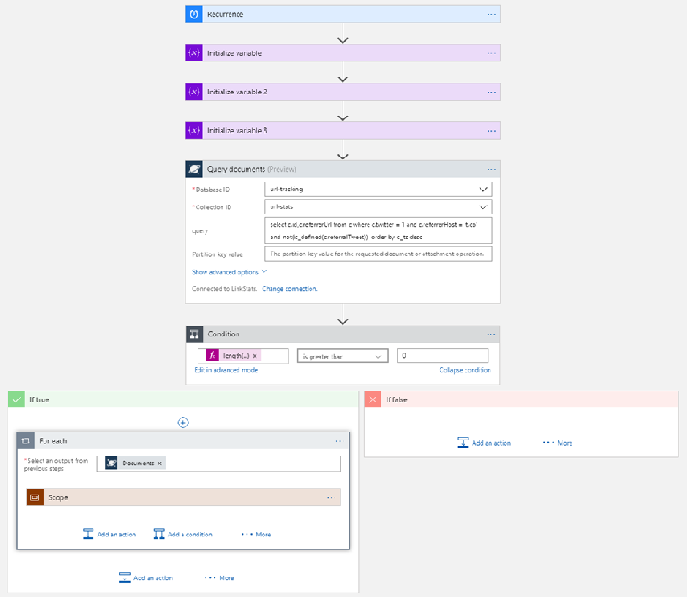
The Logic Apps dashboard shows the history of running your workflows and whether each run completed successfully or not. You can navigate into any given run and inspect the data used by each step for troubleshooting. Logic Apps also provides existing templates you can edit and are well suited for complex enterprise workflows.
To learn more, see Azure Logic Apps.
Azure Event Grid provides serverless infrastructure for event-based applications. You can publish to Event Grid from any source and consume messages from any platform. Event Grid also has built-in support for events from Azure resources to streamline integration with your applications. For example, you can subscribe to blob storage events to notify your app when a file is uploaded. Your application can then publish a custom event grid message that is consumed by other cloud or on-premises applications. Event Grid was built to reliably handle massive scale. You get the benefits of publishing and subscribing to messages without the overhead of setting up the necessary infrastructure.
The major features of event grid include:
• Fully managed event routing.
• Near real-time event delivery at scale.
• Broad coverage both inside and outside of Azure.
Scenarios Event Grid addresses several different scenarios. This section covers three of the most common ones. Ops automation
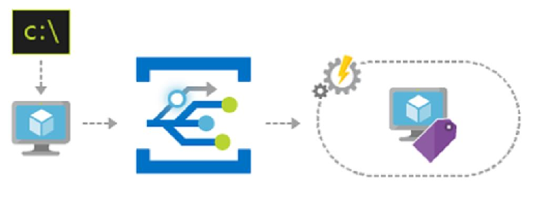
Event Grid can help speed automation and simplify policy enforcement by notifying Azure Automation when infrastructure is provisioned.
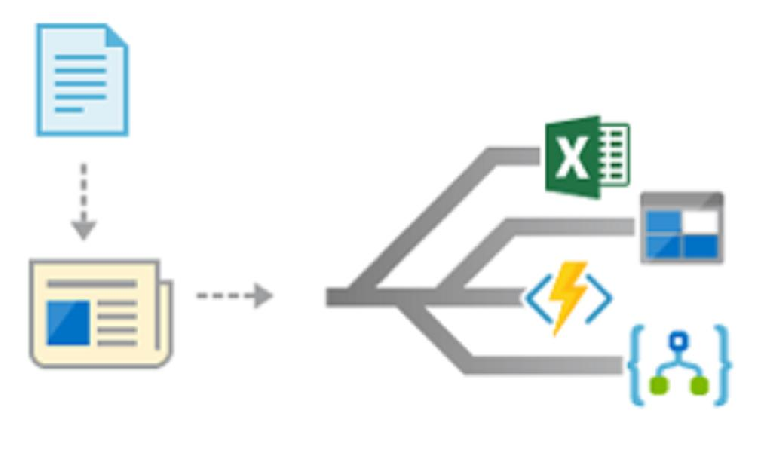
You can use Event Grid to connect your app to other services. Using standard HTTP protocols, even legacy apps can be easily modified to publish Event Grid messages. Web hooks are available for other services and platforms to consume Event Grid messages.
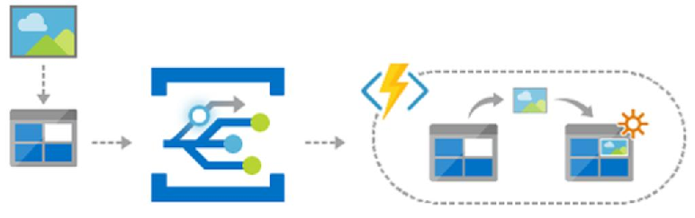
Event Grid can trigger Azure Functions, Logic Apps, or your own custom code. A major benefit of using Event Grid is that it uses a push mechanism to send messages when events occur. The push architecture consumes fewer resources and scales better than polling mechanisms. Polling must check for updates on a regular interval.
Azure provides several messaging services, including Event Hubs and Service Bus. Each is designed to address a specific set of use cases. The following diagram provides a high-level overview of the differences between the services.
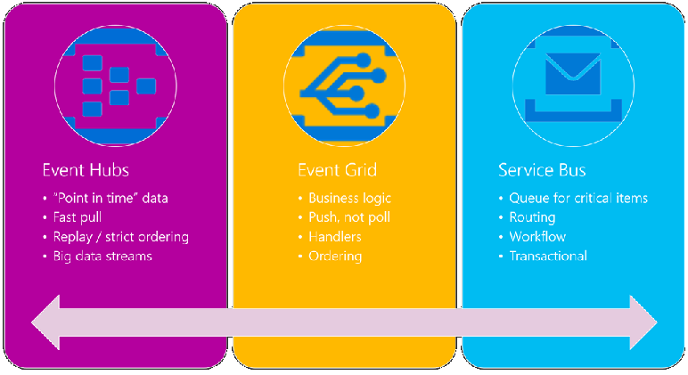
For a more in-depth comparison, see Compare messaging services.
Using Event Grid you can take advantage of the following performance guarantees:
• Subsecond end-to-end latency in the 99th percentile.
• 99.99% availability.
• 10 million events per second per region.
• 100 million subscriptions per region.
• 50-ms publisher latency.
• 24-hour retry with exponential back-off for guaranteed delivery in the 1-day window.
• Transparent regional failover.
Event Grid uses a standard schema to wrap custom events. The schema is like an envelope that wraps your custom data element. Here is an example Event Grid message:
[{ "id": "03e24f21-a955-43cc-8921-1f61a6081ce0", "eventType": "myCustomEvent", "subject": "foo/bar/12", "eventTime": "2018-09-22T10:36:01+00:00", "data": { "favoriteColor": "blue", "favoriteAnimal": "panther", "favoritePlanet": "Jupiter" }, "dataVersion": "1.0" }] |
|---|
Everything about the message is standard except the data property. You can inspect the message and use the eventType and dataVersion to de-serialize the custom portion of the payload.
Azure resource |
Event type |
Description |
|---|---|---|
Azure subscription |
Microsoft.Resources.ResourceWriteSuccess |
Raised when a resource create or update operation succeeds. |
Microsoft.Resources.ResourceWriteFailure |
Raised when a resource create or update operation fails. |
|
Microsoft.Resources.ResourceWriteCancel |
Raised when a resource create or update operation is canceled. |
|
Microsoft.Resources.ResourceDeleteSuccess |
Raised when a resource delete operation succeeds. |
|
Microsoft.Resources.ResourceDeleteFailure |
Raised when a resource delete operation fails. |
|
Microsoft.Resources.ResourceDeleteCancel |
Raised when a resource delete operation is canceled. This event happens when a template deployment is canceled. |
|
Blob storage |
Microsoft.Storage.BlobCreated |
Raised when a blob is created. |
Microsoft.Storage.BlobDeleted |
Raised when a blob is deleted. |
|
Event hubs |
Microsoft.EventHub.CaptureFileCreated |
Raised when a capture file is created. |
IoT Hub |
Microsoft.Devices.DeviceCreated |
Published when a device is registered to an IoT hub. |
Microsoft.Devices.DeviceDeleted |
Published when a device is deleted from an IoT hub. |
|
Resource groups |
Microsoft.Resources.ResourceWriteSuccess |
Raised when a resource create or update operation succeeds. |
Microsoft.Resources.ResourceWriteFailure |
Raised when a resource create or update operation fails. |
|
Microsoft.Resources.ResourceWriteCancel |
Raised when a resource create or update operation is canceled. |
|
Microsoft.Resources.ResourceDeleteSuccess |
Raised when a resource delete operation succeeds. |
|
Microsoft.Resources.ResourceDeleteFailure |
Raised when a resource delete operation fails. |
Azure resource |
Event type |
Description |
|---|---|---|
Microsoft.Resources.ResourceDeleteCancel |
Raised when a resource delete operation is canceled. This event happens when a template deployment is canceled. |
In this chapter you learned about the Azure serverless platform that is composed of Azure Functions, Logic Apps, and Event Grid. You can use these resources to build an entirely serverless app architecture, or create a hybrid solution that interacts with other cloud resources and on-premises servers. Combined with a serverless data platform such as Azure SQL or CosmosDB, you can build fully managed cloud native applications.
• App service plans
• Application Insights
• Application Insights Analytics
• Azure: Bring your app to the cloud with serverless Azure Functions
• Azure Event Grid
• Azure Event Grid event schema
• Azure Event Hubs
• Azure Functions documentation
• Azure Functions triggers and bindings concepts
• Azure Logic Apps
• Azure Service Bus
• Azure Table Storage
• Connecting to on-premises data sources with Azure On-premises Data Gateway
• Create your first function in the Azure portal
• Create your first function using the Azure CLI
• Create your first function using Visual Studio
• Functions supported languages
• Monitor Azure Functions
4CHAPTER |
|---|
When creating serverless applications with Azure Functions, your operations will typically be designed to run in a stateless manner. The reason for this design choice is because as the platform scales, it becomes difficult to know what servers the code is running on. It also becomes difficult to know how many instances are active at any given point. However, there are classes of applications that require the current state of a process to be known. Consider the process of submitting an order to an online store. The checkout operation might be a workflow that is composed of multiple operations that need to know the state of the process. Such information may include the product inventory, if the customer has any credits on their account, and also the results of processing the credit card. These operations could easily be their own internal workflows or even services from third-party systems.
Various patterns exist today that assist with the coordination of application state between internal and external systems. It’s common to come across solutions that rely on centralized queuing systems, distributed key-value stores, or shared databases to manage that state. However, these are all additional resources that now need to be provisioned and managed. In a serverless environment, your code could become cumbersome trying to coordinate with these resources manually. Azure Functions offers an alternative for creating stateful functions called Durable Functions.
Durable Functions is an extension to the Azure Functions runtime that enables the definition of stateful workflows in code. By breaking down workflows into activities, the Durable Functions extension can manage state, create progress checkpoints, and handle the distribution of function calls across servers. In the background, it makes use of an Azure Storage account to persist execution history, schedule activity functions and retrieve responses. Your serverless code should never interact with persisted information in that storage account, and is typically not something with which developers need to interact.
Stateful workflows in Durable Functions can be broken down into two intrinsic components; orchestration and activity triggers. Triggers and bindings are core components used by Azure Functions to enable your serverless functions to be notified when to start, receive input, and return results.
Orchestrations are unique when compared to other styles of triggered operations in Azure Functions. Durable Functions enables the execution of functions that may take hours or even days to complete. That type of behavior comes with the need to able to check the status of a running orchestration, preemptively terminate, or send notifications of external events.
For such cases, the Durable Functions extension provides the DurableOrchestrationClient class that allows you to interact with orchestrated functions. You get access to the orchestration client by using the OrchestrationClientAttribute binding. Generally, you would include this attribute with another trigger type, such as an HttpTrigger or ServiceBusTrigger. Once the source function has been triggered, the orchestration client can be used to start an orchestrator function.
[FunctionName("KickOff")] public static async Task [HttpTrigger(AuthorizationLevel.Function, "POST")]HttpRequestMessage req, [OrchestrationClient ] DurableOrchestrationClient { OrderRequestData data = await req.Content.ReadAsAsync } |
|---|
Annotating a function with the OrchestrationTriggerAttribute in Azure Functions marks that function as an orchestrator function. It’s responsible for managing the various activities that make up your stateful workflow.
Orchestrator functions are unable to make use of bindings other than the OrchestrationTriggerAttribute. This attribute can only be used with a parameter type of DurableOrchestrationContext. No other inputs can be used since deserialization of inputs in the function signature isn’t supported. To get inputs provided by the orchestration client, the GetInput
Also, the return types of orchestration functions must be either void, Task, or a JSON serializable value.
Error handling code has been left out for brevity
[FunctionName("PlaceOrder")] public static async Task OrderRequestData orderData = context.GetInput orderData); await context.CallActivityAsync } |
|---|
Multiple instances of an orchestration can be started and running at the same time. Calling the StartNewAsync method on the DurableOrchestrationClient launches a new instance of the orchestration. The method returns a Task
An exception of type TimeoutException gets thrown if the orchestration hasn’t started within 30 seconds.
The completed Task
Activity functions are the discrete operations that get composed together within an orchestration function to create the workflow. Here is where most of actual work would take place. They represent the business logic, long running processes, and the puzzle pieces to a larger solution.
The ActivityTriggerAttribute is used to annotate a function parameter of type
DurableActivityContext. Using the annotation informs the runtime that the function is intended to be used as an activity function. Input values to activity functions are retrieved using the GetInput
Similar to orchestration functions, the return types of activity functions must be either void, Task, or a JSON serializable value.
Any unhandled exceptions that get thrown within activity functions will get sent up to the calling orchestrator function and presented as a TaskFailedException. At this point, the error can be caught and logged in the orchestrator, and the activity can be retried.
[FunctionName("CheckAndReserveInventory")] public static bool CheckAndReserveInventory([ActivityTrigger] DurableActivityContext context) { OrderRequestData orderData = context.GetInput } |
|---|
• Durable Functions
• Bindings for Durable Functions
• Manage instances in Durable Functions
Durable Functions makes it easier to create stateful workflows that are composed of discrete, long running activities in a serverless environment. Since Durable Functions can track the progress of your workflows and periodically checkpoints the execution history, it lends itself to implementing some interesting patterns.
In a typical sequential process, activities need to execute one after the other in a particular order. Optionally, the upcoming activity may require some output from the previous function. This dependency on the ordering of activities creates a function chain of execution.
The benefit of using Durable Functions to implement this workflow pattern comes from its ability to do checkpointing. If the server crashes, the network times out or some other issue occurs, Durable functions can resume from the last known state and continue running your workflow even if it’s on another server.
[FunctionName("PlaceOrder")] public static async Task OrderRequestData orderData = context.GetInput orderData); await context.CallActivityAsync } |
|---|
In the preceding code sample, the CallActivityAsync function is responsible for running a given activity on a virtual machine in the data center. When the await returns and the underlying Task completes, the execution will be recorded to the history table. The code in the orchestrator function can make use of any of the familiar constructs of the Task Parallel Library and the async/await keywords.
The following code is a simplified example of what the ProcessPayment method may look like:
[FunctionName("ProcessPayment")] public static bool ProcessPayment([ActivityTrigger] DurableActivityContext context) { OrderRequestData orderData = context.GetInput return true; } return false; } |
|---|
In some cases, workflows may contain activities that take a relatively long period of time to complete. Imagine a process that kicks off the backup of media files into blob storage. Depending on the size and quantity of the media files, this backup process may take hours to complete.
In this scenario, the DurableOrchestrationClient’s ability to check the status of a running workflow becomes useful. When using an HttpTrigger to start a workflow, the CreateCheckStatusResponse method can be used to return an instance of HttpResponseMessage. This response provides the client with a URI in the payload that can be used to check the status of the running process.
[FunctionName("OrderWorkflow")] public static async Task [HttpTrigger(AuthorizationLevel.Function, "POST")]HttpRequestMessage req, [OrchestrationClient ] DurableOrchestrationClient orchestrationClient) { OrderRequestData data = await req.Content.ReadAsAsync } |
|---|
The sample result below shows the structure of the response payload.
{ "id": "instanceId", "statusQueryGetUri": "http://host/statusUri", "sendEventPostUri": "http://host/eventUri", "terminatePostUri": "http://host/terminateUri" } |
|---|
Using your preferred HTTP client, GET requests can be made to the URI in statusQueryGetUri to inspect the status of the running workflow. The returned status response should resemble the following code.
{ "runtimeStatus": "Running", "input": { "$type": "DurableFunctionsDemos.OrderRequestData, DurableFunctionsDemos" }, "output": null, "createdTime": "2018-01-01T00:22:05Z", "lastUpdatedTime": "2018-01-01T00:22:09Z" } |
|---|
As the process continues, the status response will change to either Failed or Completed. On successful completion, the output property in the payload will contain any returned data.
For simple recurring tasks, Azure Functions provides the TimerTrigger that can be scheduled based on a CRON expression. The timer works well for simple, short-lived tasks, but there might be scenarios where more flexible scheduling is needed. This scenario is when the monitoring pattern and Durable Functions can help.
Durable Functions allows for flexible scheduling intervals, lifetime management, and the creation of multiple monitor processes from a single orchestration function. One use case for this functionality might be to create watchers for stock price changes that complete once a certain threshold is met.
[FunctionName("CheckStockPrice")] public static async Task CheckStockPrice([OrchestrationTrigger] DurableOrchestrationContext context) { StockWatcherInfo stockInfo = context.GetInput StockPrice currentStockPrice = await context.CallActivityAsync if (initialStockPrice == null) { initialStockPrice = currentStockPrice; fireAt = context.CurrentUtcDateTime.AddSeconds(checkIntervalSeconds); await context.CreateTimer(fireAt, CancellationToken.None); continue; } decimal percentageChange = (initialStockPrice.Price - currentStockPrice.Price) / ((initialStockPrice.Price + currentStockPrice.Price) / 2); if (Math.Abs(percentageChange) >= stockInfo.PercentageChange) { // Change threshold detected await context.CallActivityAsync("NotifyStockPercentageChange", currentStockPrice); break;} // Sleep til next polling interval fireAt = context.CurrentUtcDateTime.AddSeconds(checkIntervalSeconds); await context.CreateTimer(fireAt, CancellationToken.None); } } |
|---|
DurableOrchestrationContext’s CreateTimer method sets up the schedule for the next invocation of the loop to check for stock price changes. DurableOrchestrationContext also has a CurrentUtcDateTime property to get the current DateTime value in UTC. It’s better to use this property instead of DateTime.UtcNow because it’s easily mocked for testing.
• Azure Durable Functions
• Unit Testing in .NET Core and .NET Standard
5CHAPTER |
|---|
There are many use cases and scenarios for serverless applications. This chapter includes samples that illustrate the different scenarios. The scenarios include links to related documentation and public source code repositories. The samples in this chapter enable you to get started on your own building and implementing serverless solutions.
This example uses serverless to do a map/reduce operation on a big data set. It determines the average speed of New York Yellow taxi trips per day in 2017.
Big Data Processing: Serverless MapReduce on Azure
Learn how to use functions to execute server-side logic and build serverless architectures.
• Choosing the best Azure service for your business
• Creating Azure Functions
• Using triggers
• Chaining functions
• Long-running workflows
• Monitoring
• Development, testing, and deployment Create serverless applications
This sample showcases the new Azure Functions tooling for C# Class Libraries in Visual Studio. Create a website where customers submit product reviews that are stored in Azure storage blobs and
CosmosDB. Add an Azure Function to perform automated moderation of the customer reviews using Azure Cognitive Services. Use an Azure storage queue to decouple the website from the function.
Customer Reviews App with Cognitive Services
This example parses a set of CSV files from hypothetical customers. It ensures that all files required for a customer “batch” are ready, then validates the structure of each file. Different solutions are presented using Azure Functions, Logic Apps, and Durable Functions.
File processing and validation using Azure Functions, Logic Apps, and Durable Functions
An example of how a developer could implement an in-editor data visualization solution for their game. In fact, an Unreal Engine 4 Plugin and Unity Plugin were developed using this sample as its backend. The service component is game engine agnostic.
In-editor game telemetry visualization
GraphQL Create a serverless function that exposes a GraphQL API. Serverless functions for GraphQL
This sample implements a new communication protocol to enable reliable upstream communication from IoT devices. It automates data gap detection and backfill.
IoT Reliable Edge Relay
A reference architecture that walks you through the decision-making process involved in designing, developing, and delivering the Rideshare by Relecloud application (a fictitious company). It includes hands-on instructions for configuring and deploying all of the architecture’s components.
Serverless Microservices reference architecture
Azure Functions are easy to implement and maintain, and accessible through HTTP. They are a great way to implement an API for a mobile application. Microsoft offers great cross-platform tools for iOS, Android, and Windows with Xamarin. As such, Xamarin and Azure Functions are working great together. This article shows how to implement an Azure Function in the Azure portal or in Visual Studio at first, and build a cross-platform client with Xamarin.Forms running on Android, iOS, and Windows.
Implementing a simple Azure Function with a Xamarin.Forms client
This sample shows how to utilize Durable Functions’ fan-out pattern to load an arbitrary number of messages across any number of sessions/partitions. It targets Service Bus, Event Hubs, or Storage Queues. The sample also adds the ability to consume those messages with another Azure Function and load the resulting timing data in to another Event Hub. The data is then ingested into analytics services like Azure Data Explorer.
Produce and Consume messages through Service Bus, Event Hubs, and Storage Queues with Azure Functions
• Big Data Processing: Serverless MapReduce on Azure
• Create serverless applications
• Customer Reviews App with Cognitive Services
• File processing and validation using Azure Functions, Logic Apps, and Durable Functions
• Implementing a simple Azure Function with a Xamarin.Forms client
• In-editor game telemetry visualization
• IoT Reliable Edge Relay
• Produce and Consume messages through Service Bus, Event Hubs, and Storage Queues with Azure Functions
• Serverless functions for GraphQL
• Serverless Microservices reference architecture
6CHAPTER |
|---|
Conclusion
The following key takeaways are the most important conclusions from this guide. Benefits of using serverless. Serverless solutions provide the important benefit of cost savings because serverless is implemented in a pay-per-use model. Serverless makes it possible to independently scale, test, and deploy individual components of your application. Serverless is uniquely suited to implement microservices architectures and integrates fully into a DevOps pipeline. Code as a unit of deployment. Serverless abstracts the hardware, OS, and runtime away from the application. Serverless enables focusing on business logic in code as the unit of deployment. Triggers and bindings. Serverless eases integration with storage, APIs, and other cloud resources. Azure Functions provides triggers to execute code and bindings to interact with resources. Microservices. The microservices architecture is becoming the preferred approach for distributed and large or complex mission-critical applications that are based on multiple independent subsystems in the form of autonomous services. In a microservice-based architecture, the application is built as a collection of services that can be developed, tested, versioned, deployed, and scaled independently. Serverless is an architecture well-suited for building these services. Serverless platforms. Serverless isn’t just about the code. Platforms that support serverless architectures include serverless workflows and orchestration, serverless messaging and event services, and serverless databases. Serverless challenges. Serverless introduces challenges related to distributed application development, such as fragmented and independent data models, resiliency, versioning, and service discovery. Serverless may not be ideally suited to long running processes or components that benefit from tighter coupling. Serverless as a tool, not the toolbox. Serverless is not the exclusive solution to application architecture. It is a tool that can be leveraged as part of a hybrid application that may contain traditional tiers, monolith back ends, and containers. Serverless can be used to enhance existing solutions and is not an all-or-nothing approach to application development.
46 CHAPTER 6 | Conclusion